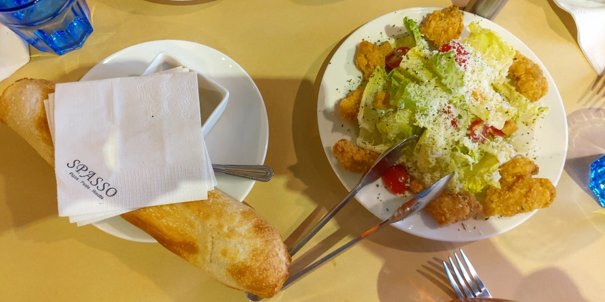
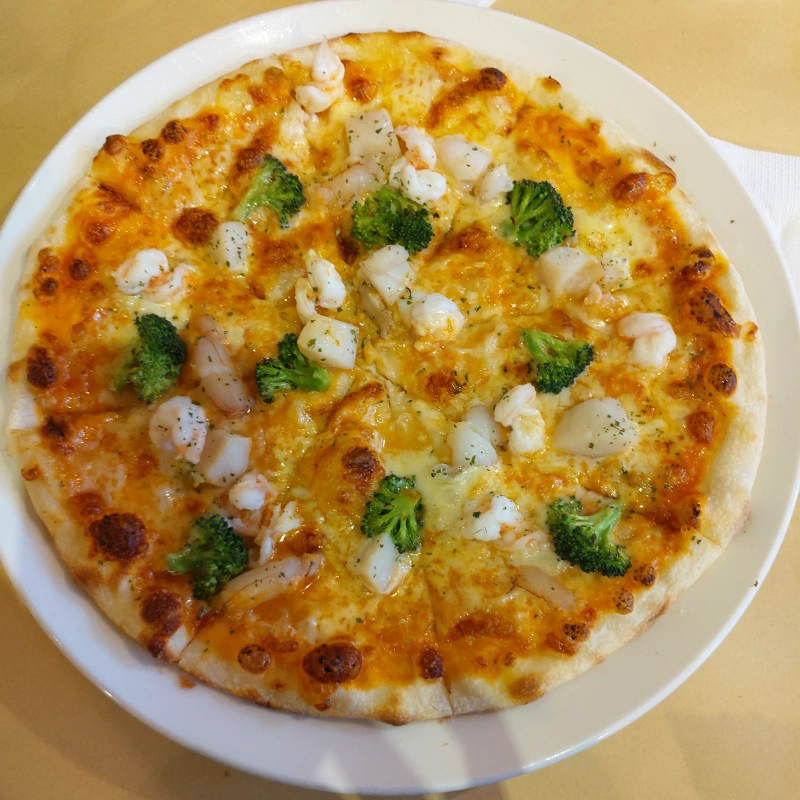

[新竹] Spasso italiano / pasta / pizza / risotto Food & Restaurant
| 餐廳名稱: | Spasso italiano/pasta/pizza/risotto Food&Restaurant |
|---|---|
| 地 址: | 新竹市東區三民路103-1號 |
| 營業時間: | 週日～週六 11:30 - 21:30 每日營業 |
| 電 話: | 03 535 2288 |
這是一間很好吃的義大利餐廳，之前就來過了，這一訪就來報導一下了。這邊是新竹市三民路， 整條三民路明明是河岸兩旁滿滿的停車位，隨著新竹市三民路超多熱門餐廳、附近新竹巨城興起，變得是越來越難停。 還好 Spasso 下午有營業，在某個假日，大約下午兩點多這種冷門時段到達餐廳附近，竟然發現一個公有停車格，太幸運了。
似乎不少人跟我們一樣，利用冷門時段來用餐。後續也還有幾組客人進來。
Spasso 菜單蠻多頁的，請大家點下面連結，去它的官方粉絲頁看好了。
最後點了 耶誕節特有的雙人套餐，再加一個小朋友堅持要吃的肉醬千層麵，最後又加了一個提拉米蘇甜點，真的是樣樣都精彩，樣樣都好吃，只可惜住得遠，久久才能來一次。
下圖是雙人套餐的飲料，選了咖啡與檸檬紅茶，請服務人員餐前就先上。

耶誕節雙人套餐的附湯兩碗，肉醬千層麵也有附一碗湯，服務生送上時還強調肉醬千層麵附湯份量小一點，請各位讀者猜猜看是哪一碗好了。

耶誕節雙人套餐的套餐沙拉 與 麵包。這裡的麵包與民族路的 Friendy Pizzaria 一樣， 都是用 Pizza 的麵糰 現場烘烤，只是 Friendy 特意將麵糰形狀拉得非常長條，算是噱頭吧，這邊麵包外型正常一點， 但都一樣是剛出爐的熱度，都有濃厚的麵粉香，塗上奶油更香了，很好吃。沙拉也是調味不錯，很多炸雞柳條，青菜酥脆，淋醬優，也是好吃。 
9號的海鮮Pizza，似乎也是耶誕節才能選，滿滿的蝦、蟹腿肉、干貝，吃起來就很爽，很好吃。 
奶油起司干貝燉飯，因為我愛白醬，所以跟Pizza稍微重複一點食材，鹹香好吃。
加點的 經典肉醬千層麵，這道菜的靈魂就是肉醬，肉醬熬的很香，千層麵剛烤出來，熱熱地吃，真好吃。
加點的 提拉米蘇，甜度很好，鬆軟好吃，用這個結束這一餐。
樣樣都好吃啊，真希望能開個竹北分店，這樣就不用跑到巨城這一區來人擠人了。